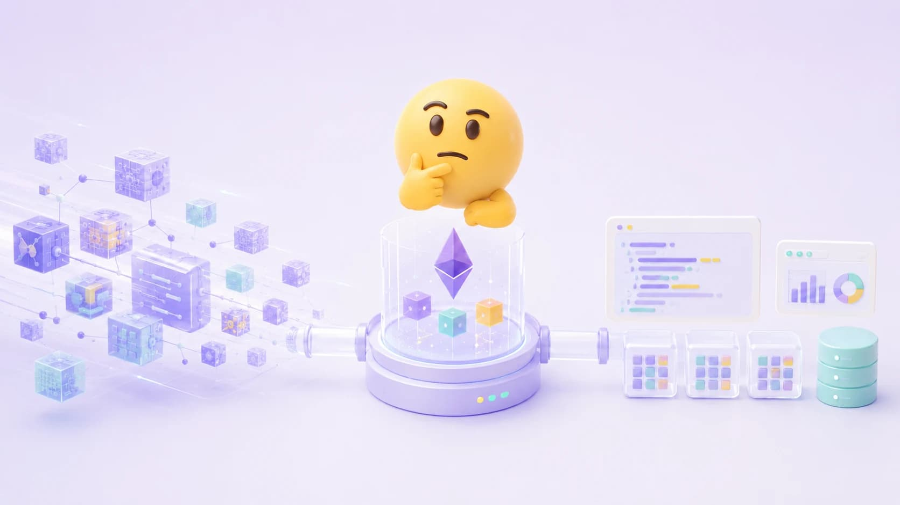

Every EVM app needs indexed data. For years, that meant The Graph. For most of what we're shipping now at Axiom Chain, we've switched to Ponder — here's what we've learned, and where The Graph is still the right call.
Intro
Why We Switched to Ponder for Onchain Indexing
At Axiom Chain we stand up indexers on most serious onchain projects. It's load-bearing infrastructure, the entire frontend depends on it.
Every EVM app needs indexed data. You deploy the smart contracts, then realise your frontend can't read any of it efficiently, so you build an indexer. For years, that meant The Graph. For most of what we're shipping now, we've switched to Ponder. Here's what we've learned, and where The Graph is still the right call.
The indexer is load-bearing
If you're building anything meaningful on an EVM chain, a DEX, an NFT marketplace, a governance dashboard, you need indexed data. Raw RPC calls don't scale. You can't paginate events, join across contracts, or query historical state without an indexing layer sitting between the chain and your application.
At Axiom Chain, we build indexers constantly. Our clients are often pioneering new EVM L1s and L2s, which means we're standing up infrastructure on chains where tooling doesn't exist and timelines are tight. It's necessary infrastructure that the entire app layer depends on.
For most of the industry's history, that meant subgraphs. The Graph is battle-tested, trusted by teams like Uniswap and Aave, and offers decentralised hosting through its network of indexers. It earned its position. But when you're shipping faster than ever on a new chain with a small team, the developer experience matters.
Where the subgraph workflow adds friction
This isn't a takedown of The Graph. It works. We've shipped production subgraphs and will continue to use them where decentralised hosting matters. But the development workflow has friction that compounds under pressure.
The manifest file. Every subgraph starts with a YAML manifest that wires together your data sources, ABIs, event handlers, and schema. It's configuration-as-code in the worst sense. You're maintaining a file that duplicates information already expressed in your handlers and schema, and a typo in it produces errors that are hard to trace.
AssemblyScript. Subgraph mappings are written in AssemblyScript, a TypeScript-like language that compiles to WebAssembly. It looks like TypeScript but isn't. The type system is different, the standard library is limited, and debugging is painful. If your team writes TypeScript every day, and most web3 teams do, this is a context switch that slows everyone down.
Manual GraphQL schemas. You define your entities by hand, then the codegen step produces typed helpers. It works, but it's another file to maintain, another place where your data model lives, and another source of drift between what you think your schema is and what it actually is.
Local development. Running a subgraph locally means Docker, Graph Node, IPFS, and a Postgres instance. The feedback loop is slow. You make a change, redeploy locally, wait for reindexing, and check the output. There's no hot reload. For rapid iteration on a new chain where you're discovering the contract interfaces as you go, this kills velocity.
None of these are dealbreakers on their own. But when you're on a two-week sprint to deliver and the indexer is needed for a new L2 client, they add up. We needed something that matched the speed we were already moving at.
Why Ponder fits the shape we ship in
Ponder is an open-source TypeScript framework for building EVM indexers. No YAML manifests. No AssemblyScript. No manual GraphQL schemas. You define your contracts, your database schema, and your indexing logic in TypeScript, and Ponder handles the rest.
Configuration lives in a single TypeScript file. The ABI is imported as a TypeScript constant, so every event name, argument type, and function signature is type-inferred end to end. Schemas are Drizzle-style, so for teams already running Drizzle ORM (at Axiom Chain we do, heavily) the syntax is immediately familiar. One schema definition creates your database table, generates the GraphQL types, and provides full TypeScript inference inside your indexing functions. One source of truth. No codegen step. No separate schema file drifting out of sync.
Indexing functions are just async TypeScript with typed event arguments and a database context. Upserts are a single method call, no manual entity loading and saving. The GraphQL API comes for free: register the middleware and every table gets singular and plural query fields with filtering, sorting, and pagination out of the box. Because the API layer is Hono, you can add custom REST endpoints alongside GraphQL when the auto-generated schema doesn't cover what your frontend needs.
What this actually looks like in practice
The technical differences exist, but the impact is felt in how fast a team can move.
Onboarding is instant. If a developer knows TypeScript and has used Drizzle or any SQL query builder, they can write Ponder indexing functions on day one. There's no AssemblyScript learning curve, no Graph Node architecture to understand, no YAML manifest to debug. We've had engineers go from zero Ponder experience to a deployed indexer in under a day.
Hot reload changes everything. Simple commands start a local dev server that watches your files. Change a schema, add an event handler, fix a bug, it recompiles and re-indexes automatically. No Docker. No manual redeploy. The feedback loop drops to seconds.
Postgres is your database. Ponder writes directly to Postgres. This means your indexed data lives in the same database technology as the rest of your stack. You can join onchain data with offchain data. You can run migrations. You can use the same connection pooling and monitoring you already have. For teams that already run Postgres (and the industry is clearly moving this direction) this eliminates an entire infrastructure layer.
Performance is faster. Ponder's store operations run in-memory and flush to the database via efficient copy statements. Their benchmarks claim 10-15x faster indexing than Graph Node for some contracts, and we've noticed it. On a recent L2 project, our Ponder indexer completed a full historical backfill in a fraction of the time we'd experience for an equivalent subgraph.
Type safety is end-to-end. From the ABI import through to the API response, every step is typed. A renamed event in your ABI breaks the build immediately, not silently at runtime after a 30-minute reindex. This catches errors that subgraph development experiences much later in the cycle.
Where The Graph is still the right call
Ponder isn't a universal replacement. The Graph has genuine advantages in specific contexts.
Decentralised hosting. If your protocol needs censorship-resistant data infrastructure, The Graph's network of independent indexers is purpose-built for this. Ponder is self-hosted - you run it on your own infrastructure. For many production applications this is fine or even preferred, but for protocols where decentralisation of the data layer is a requirement, The Graph remains the right choice.
Ecosystem maturity. The Graph has years of production battle-testing across thousands of subgraphs. The tooling ecosystem (Subgraph Studio, Goldsky and other hosted services) are mature and well-documented. If you're building on a chain with existing subgraphs you can fork, that's an advantage.
Community and adoption. Most major DeFi protocols publish their subgraphs. If you're integrating with Uniswap, Aave, or Compound, consuming their existing subgraph is easier than re-indexing their contracts yourself in any framework.
We still use The Graph where these factors are tangible. The point isn't that one tool is universally better. It's that for the specific pattern we hit most often at Axiom Chain; ship a new indexer fast, with bespoke contracts and lean infrastructure around it, Ponder is the better fit.
A Note on Migration
For teams currently running subgraphs, Ponder's CLI reads an existing manifest and bootstraps the equivalent Ponder config and schema. Moving across doesn't have to be a rewrite.
The real shift isn't the framework. It's the workflow. When your indexer runs with the same ergonomics as the rest of your TypeScript stack, with fast feedback, type safety, and familiar patterns, you stop treating it as infrastructure you dread touching and start treating it as application code you iterate on. That's the difference between an indexer that works and one that keeps up with the pace you're actually shipping at.